Payroll Reports This section includes samples and descriptions of Payroll-related reports available in MenuLink Client. Depending on your system set-up, you may not have access to all reports and selection options described. Contact your Menulink Administrator for more information. For general information on how to view and print reports, as well as selecting report options, see Viewing and Printing Reports. You can access Payroll reports from the Reports button on the Labor Screen or from the Reports button on the Main Switchboard. 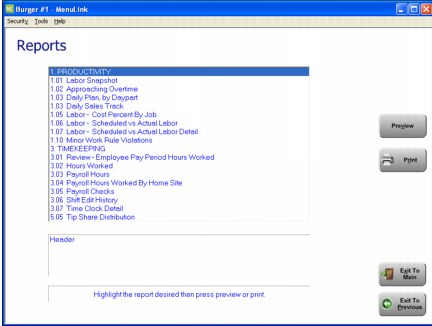 Approaching Overtime Report The Approaching Overtime report displays employees who have worked over 30, 35, and 40 hours for the week, as well as the remaining hours they are scheduled. The report takes the hours worked and adds the scheduled hours remaining and the result will appear in the appropriate column (i.e. 30-35 in the ‘30’ column; 35-40 in the ‘35’ ) 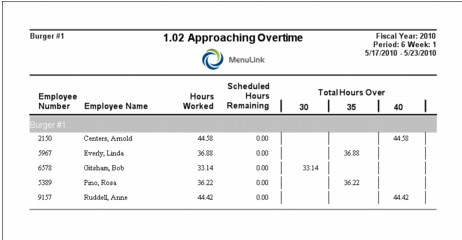 Employee Punches Errors Report The Employee Punches Errors report displays errors that have occurred between the MenuLink Client and the POS System. MenuLink Client reports an error when it cannot match the Employee code entered on the POS with a corresponding Employee code in MenuLink Client. Contact your MenuLink Administrator for more information. 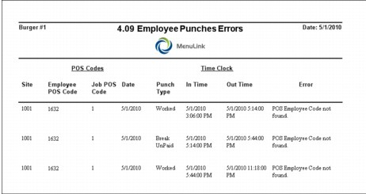 Hours Worked Report The Hours Worked report displays the regular, overtime, and double overtime hours worked for each employee. 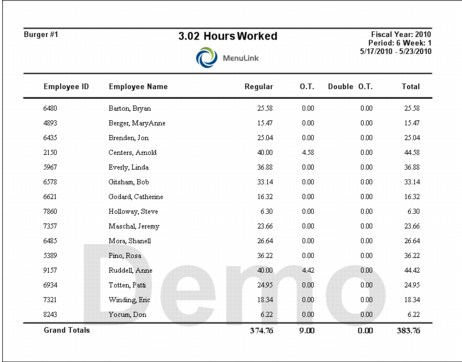 Payroll Checks The Payroll Checks report displays the regular, overtime, and double overtime hours worked by each employee for a selected time frame (typically the payroll period). This report also includes a signature line for employees to sign when receiving a payroll check. 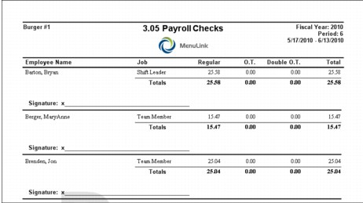 Payroll Hours The Payroll Hours report displays each employee who worked during the selected time frame, their regular, overtime, and double overtime hours worked, and employee profile information such as borrowed store ID and hire date. The last page of the report summarizes payroll hours by job. 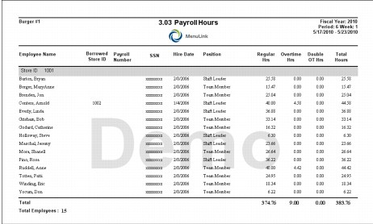 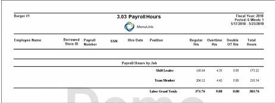 Time Clock Detail Report The Time Clock Detail report displays time clock punch information (clock in/out times, dates, day of the week), as well as regular and overtime hours worked. At the end of the report is a summary of labor totals by job. 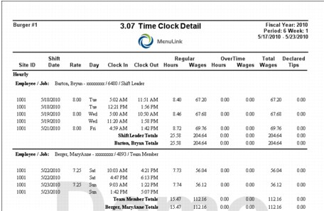 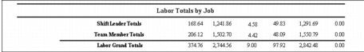 Time Clock Open Punches Report The Time Clock Open Punches report displays, for the selected time frame, employees who clocked in but did not clock out. The report shows the employee name, job, business date, and clock in time, and pay rate. 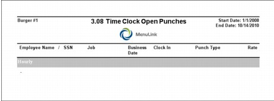 Time Clock Punches The Time Clock Punches report displays the names of employees who clocked in and out for paid (worked) time periods, the dates and times of the time clock punches, and the source of the punch (e.g., POS or name of the MenuLink user who made a correction). 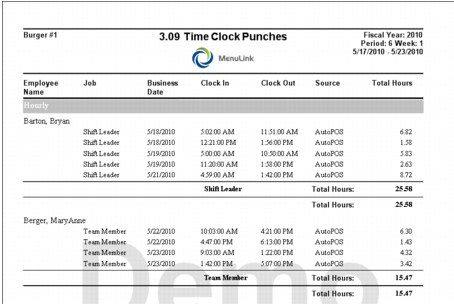 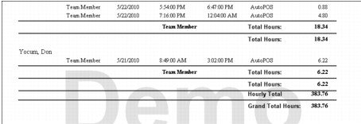 Time Clock Punches – All Report The Time Clock Punches – All Report is similar to the Time Clock Punches report described above, except that the report also includes unpaid break time punches. At the end of the report, a summary of labor hours totals by job is shown. 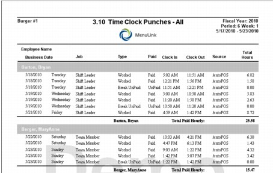 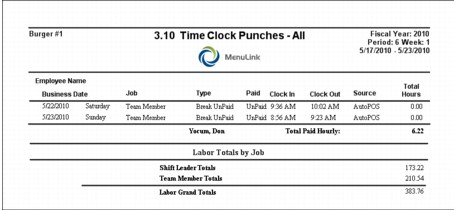 Time Clock Punches Summary The Time Clock Punches Summary report displays, for the selected time frame, the names of employees, jobs, and hours worked. 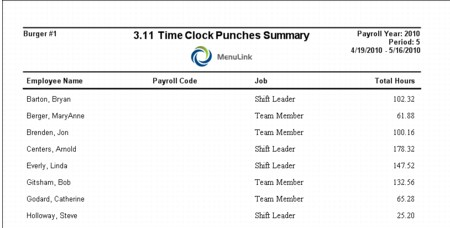 Non-Worked Hours by Employee The Non-Worked Hours by Employee report displays, for the selected time frame, the names of employees, date, job name, pay type and hours allocated to that pay type. 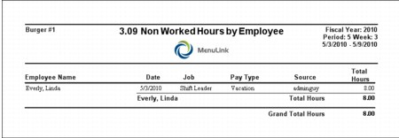